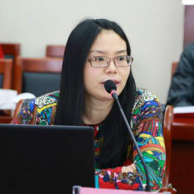

作家专栏
-
王蓬

作品列表：
人物简介：
王蓬，男，汉族，1948年11月出生，陕西西安人，大学学历，1966年参加工作，无党派，一级作家。 著有《王蓬文集》（八卷）。现任陕西省作家协会副主席、汉中市文联主席、汉中市作协主席， 享受国务院特殊津贴及陕西省有突出贡献专家。著有长篇小说《山祭》、《水葬》，中短篇小说集《油菜花开的夜晚》、 《隐秘》、《黑牡丹和她的丈夫》，散文集《乡思绵绵》、《京华笔记录》、《汉中女子》，传记文学《流浪者的足迹》、 以及历时10年创作的上下两卷60万字的蜀道历史文化散文及人物传记《山河岁月》等。 -
吴元贵

作品列表：
人物简介：
吴元贵，陕西省南郑县人，陕西中烟退休职工。中共党员。陕西省作家协会会员、 省民间文艺家协会会员。现任汉中市南郑区文联副秘书长、南郑区民间文艺家协会主席、 区作家协会副主席、《汉中民间文化》杂志副主编、《南郑文艺》执行主编、《汉中印象》副总编。 近年来，先后完成了《汉中市志》《汉中市抗震救灾志》《汉中市公安志》《南郑文史》《美丽南郑》 《名人笔下的南郑》等书籍的编辑、责任编辑工作，主持编著出版了《古今诗文咏南郑》《南郑人物谱》 《南郑风物》《安汉研究》《汉山樵歌》等地域文化专著和《南郑文艺》《民间文艺》期刊。多年来， 先后在中省市报刊发表报告文学、散文、诗歌、摄影作品数百篇（首），策划开展了多项地域文化活动。个人博客：
汉中印象吴元贵 -
冯贵华
人物简介：
冯贵华，1958年出生，现供职于南郑县总工会。上世纪80年代中期，开始文学创作， 先后在《陕西日报》、《星星诗刊》、《诗神》、《延河》、《人民日报》等国内报刊发表诗歌、 散文、报告文学等文学作品300多万字，有影视作品问世，作品收入多种文集，并有6种编著出版。 诗集《激情阳光》、散文集《指间风声》2012年由中国文联出版社出版。 散文《残荷之美》获2013年中国散文年会二等奖，散文《心灵的玉泉》获“南郑旅游杯”征文一等奖， 《南郑赋》获“魅力南郑”征文二等奖。《南郑赋》《宁强赋》《留坝赋》《城固赋》入选 《陕西百县赋》一书，《汉中赋》《汉调桄桄赋》发表《秦风》杂志；《汉中赋》发表《中华辞赋》 2013年6期；另有新作《汉台赋》《镇巴赋》《勉县赋》《洋县赋》《西乡赋》《佛坪赋》《略阳赋》 《汉中滨江文化公园赋》等。系中国民主同盟盟员，中国辞赋联合会、陕西省作家协会、陕西省赋学会会员， 南郑县作家协会副主席，南郑县民间文艺家协会副主席，政协南郑县第七、八、九届委员。个人博客：
冯贵华的博客 -
魏玲

作品列表：
人物简介：
九子，姓名魏玲，女，大学毕业后执教至今，嗜文，常著文章以自娱，著有长篇小说《体香恋》和杂文、散文若干。
九子自幼喜文，熟读中外名家经典，常提笔抒情，畅叙世间人物悲欢，乐于游走于名山大川间。 虽无仲尼墨翟之贤，无管仲伯夷之能，无王勃曹植之才，然九子有坚毅之心，青云之志，醇厚之情，亦有敢于创新之志，自强不息。 九子和安汉为同乡之人，幼闻安公之传说，感激涕零，用两年功夫，搜集整理安公之遗闻，用百姓喜闻乐见之法，精耕细耘， 写成《魂断黎坪》，将安公一片赤诚之心面世，盼斧正. -
温艳
作品列表：
人物简介：
温艳，女，汉族，陕西南郑人，历史学博士，博士后。 1997年毕业于陕西师范大学历史系，在陕西理工大学（原汉中师范学院）历史系任教， 2016年4月调入陕西师范大学历史文化学院，主要从事近现代史方向教学。 主要研究方向为：中国近现代社会经济史、近代灾荒史、近代西北史等。详细介绍：
陕师大历史文化学院温艳主页